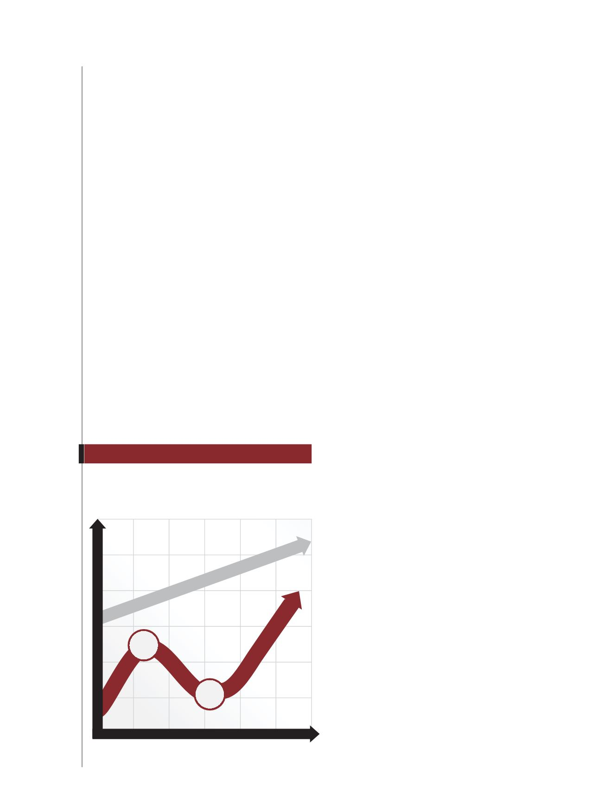

70 / 116
70 / 116


70
SOUTH CHINA ELITE
Corporate strategies and economic cycles
An economic cycle is comprised of two major parts
and four stages. Part 1 is “Peak to Trough”, including
the stages of recession and depression. In a recession
period, both business activities and asset prices decrease.
Banks become more conservative in lending. In a
depression period, people are very pessimistic about
economic prospects. Many companies go bankrupt and
the unemployment rate soars.
Part 2 is “Trough to Peak”, including the stages
of recovery and prosperity. In a recovery period,
corporations begin to expand their businesses and
the unemployment rate drops. In a prosperity period,
corporate revenue increases and rental charge soars.
In this period, inflation increases such that everything
becomes more expensive. Graph 1 summarizes these
stages of an economic cycle.
Most companies adopt procyclical strategies for
business management. When economic environments
are prosperous, they have cash inflows increased and
thus expand their business aggressively. When the peak
soon passes and recession arrives they face losses and
close down some operations in the period of depression.
Many over-expanded companies collapse in this period.
In fact, these strategies passively react to economic cycles.
Being a survivor in economic downturns is a
necessary condition for a company to grow. To deal with
recession and depression, companies need to think about
countercyclical strategies. More specifically they must
adopt countercyclical strategies in the prosperity period.
These strategies include:
1. Getting sufficient long-term funds: During
economic downturns, a company makes less, even
negative profit, and finds it hard to get bank loans.
All lenders are extremely conservative in economic
downturns. If the company gets sufficient long-term
funds from equity issuance, bond issuance or new loans
in advance, the company will easily sail through those
hard times. It will even be capable of acquiring new
assets and expanding its businesses when everything
becomes cheaper.
2. Closing down less profitable operations: In
the period of prosperity, the company can review the
profitability of their business units and close down the
unprofitable ones. This saves plenty of cash flow during
economic downturns.
3. Tightening credit lines: Many companies become
insolvent because their debtors are unable to pay in
economic downturns. To avoid this, companies can
review credit lines offered to their customers before
economic downturns. It can offer discounts for cash
sales, especially to those less credible customers.
THE STAGES OF A TYPICAL ECONOMIC CYCLE
典型經濟週期的各個階段
GRAPH
圖
1
Business Activities
Trough
Trough
Prosperity
Recovery
Prosperity
Peak
Recession
Depression
Years